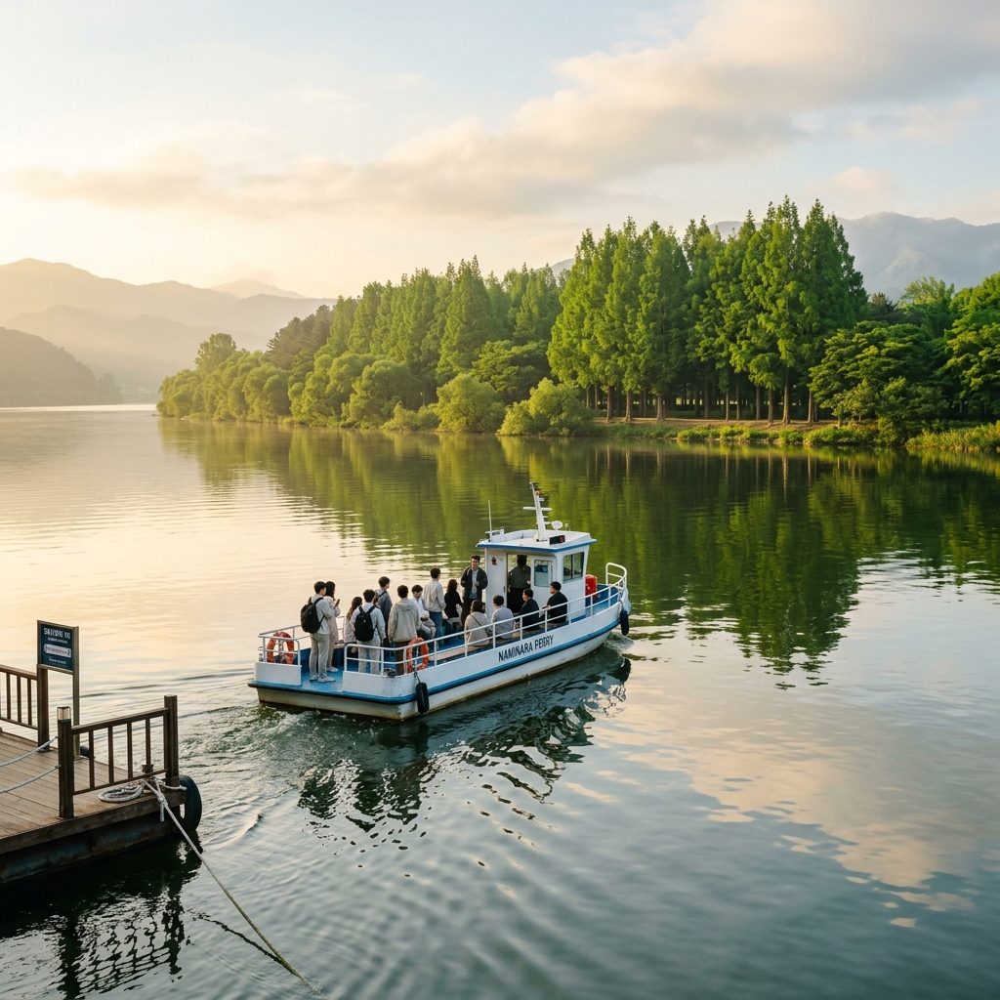
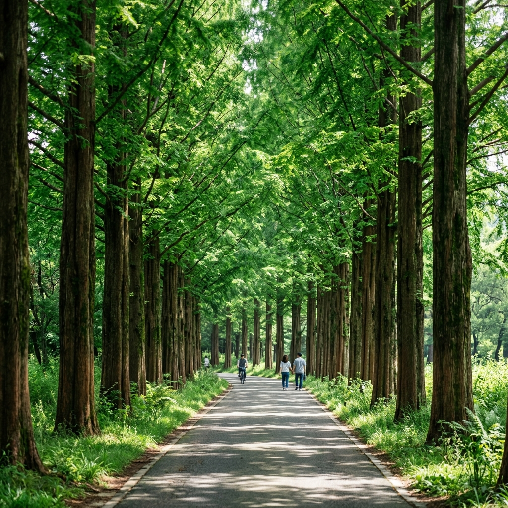
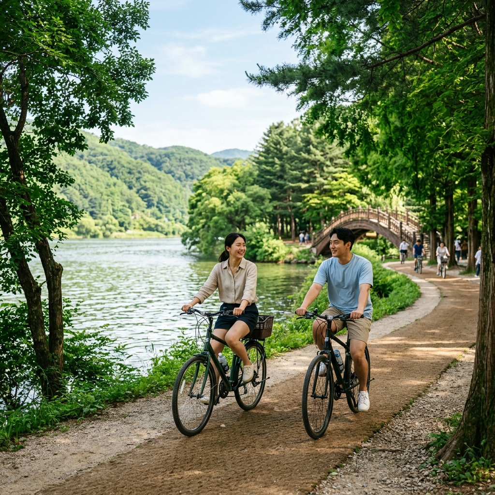

남이섬 6월 신록 — 메타세콰이어 초록 물결과 수상레저, 가평 당일 코스
6월의 남이섬은 화려한 벚꽃 대신 짙고 투명한 초록이 섬 전체를 뒤덮는 계절입니다. 메타세콰이어가 가장 왕성하게 잎을 키우고, 연인 나무와 이집트 거리 가로수가 하나로 이어지는 초록 터널 아래에는 서늘한 그늘이 드리워집니다. 강렬한 여름 피서지가 될 7~8월 이전, 6월은 남이섬의 절정 신록 시즌으로 인파가 비교적 적고 기온도 쾌적합니다. 배편·입장 방법부터 주요 코스, 수상레저, 가평 연계 코스, 주차 팁까지 한 번에 정리해 드립니다.
01. 6월 남이섬, 지금 방문해야 하는 이유
남이섬의 계절 중 방문객이 가장 덜 붐비면서도 풍경이 가장 아름다운 시기를 꼽으라면 단연 6월 초중순입니다. 4~5월의 벚꽃·이팝나무 시즌에는 주말 오전부터 매표소 줄이 100m를 넘는 날도 있지만, 6월은 꽃 시즌이 끝났다는 인식 때문에 방문객이 눈에 띄게 줄어듭니다.
그러나 실제로는 메타세콰이어 길이 연초록에서 짙은 녹색으로 성숙하는 가장 수묵화 같은 시기가 바로 6월이며, 자전거를 타며 섬을 한 바퀴 도는 코스가 가장 여유롭습니다. 낮 기온이 25°C 안팎을 오르내리기 때문에 배에서 내리는 순간부터 짙은 나무 그늘 아래서 걷는 내내 쾌적함을 유지하기도 좋습니다. 에어컨 없이도 산책이 가능한 마지막 달이라고 해도 과언이 아닙니다.
또한 6월 중에는 나미나라공화국의 계절 소품과 풍경이 새로 정비되어 사진 구도가 풍성해집니다. 이집트 거리의 야자수 장식도 여름 테마로 교체되어 이국적인 분위기가 더해지며, SNS 인생샷을 노리는 여행자들에게도 숨겨진 보석 같은 시기입니다. 수상레저 시즌도 본격 개막하므로 다양한 체험을 한 번에 즐길 수 있다는 점도 6월 방문의 큰 장점입니다.
02. 남이섬 기본 정보 — 배편·입장료·운영 시간
남이섬(나미나라공화국)으로 가는 유일한 방법은 가평 선착장에서 출발하는 여객선입니다. 서울에서 ITX 청춘이나 경강선을 타고 가평역에 내리면 선착장까지는 도보 약 10분이며, 선착장 바로 앞에 택시 정류장도 있습니다.
2026년 기준 입장료(선박 왕복 포함)는 성인 19,000원, 중·고등학생 16,000원, 초등학생(36개월 이상) 13,000원입니다. 선박은 오전 8시부터 오후 9시까지 운항하며 연중무휴로 운영됩니다. 6월 비성수기에는 배 대기 시간이 짧아 당일치기 여행에 매우 유리합니다.
도착 후 섬 내 자전거 대여소에서 2인용·일반용 자전거를 빌릴 수 있고, 전기 자전거도 추가 요금에 제공됩니다. 유모차와 반려동물 동반도 가능하지만 반려동물은 전용 캐리어에 넣어야 합니다. 성수 주말에는 온라인 예약(namisum.com)을 미리 해두면 매표소 줄을 피할 수 있습니다.

가평 선착장에서 남이섬으로 향하는 여객선 / AI 제작 이미지
03. 메타세콰이어 길 — 6월 신록의 절정
남이섬의 상징 메타세콰이어 가로수 길은 총 길이 약 1.1km로, 섬의 중심 도로를 따라 양쪽에 수십 년 된 나무들이 늘어서 있습니다. 봄에는 연초록, 가을에는 붉은 단풍으로 유명하지만, 6월의 깊고 짙은 녹색은 또 다른 감동을 선사합니다.
아침 일찍(오전 9시 이전) 도착하면 안개가 낄 때 나무 사이로 새어 들어오는 역광 빛줄기를 사진에 담을 수 있습니다. 이 빛을 쫓아 전국의 사진 작가들이 6월에도 남이섬을 찾는 이유 중 하나입니다. 메타세콰이어 길의 시작 지점인 선착장 부근에서 섬 중앙부까지 걸어서 약 15분, 자전거로는 5분 내외입니다.
도로 양쪽에는 잔디밭이 펼쳐지고, 잔디 위에 피크닉 매트를 깔고 쉬는 가족 단위 여행객들을 어렵지 않게 볼 수 있습니다. 6월에는 그늘이 두텁기 때문에 낮 기온이 다소 올라도 이 길만큼은 서늘합니다. 걸으면서 느끼는 피톤치드와 풀냄새가 도심의 피로를 한 번에 씻어주는 느낌이라는 방문객이 많습니다. 사진 구도를 잡을 때는 길 끝부분에서 뒤를 돌아보면 두 줄의 나무가 하나의 소실점으로 모이는 인상적인 앵글이 완성됩니다.
04. 연인 나무·이집트 거리·나미콘서트홀
남이섬 내 다양한 포토존 중 연인 나무는 두 그루의 나무가 맞닿아 자란 형태로, 사계절 내내 커플 사진 명소로 꼽힙니다. 6월에는 초록 잎이 두 나무를 가득 덮어 더 풍성한 사진을 찍을 수 있습니다. 특히 오후 역광을 맞으면 잎 사이로 빛이 산란되어 영화 포스터 같은 분위기가 연출됩니다.
이집트 거리는 야자수와 스핑크스 등 이집트 테마 조형물이 줄지어 있는 구역입니다. 한국에서 이런 이국적 풍경을 만나기 어렵다는 점에서 SNS 인증샷 명소로 인기가 높고, 여름 테마가 더해지는 6월에는 색채가 더욱 강렬해집니다. 모래색 조형물과 짙은 초록 나무의 조합이 예상치 못한 색감 대비를 만들어냅니다.
나미콘서트홀은 섬 내 야외 무대로, 계절별로 작은 음악회나 공연이 열립니다. 6월 주말에는 오후 시간대에 버스킹 공연이 예정되어 있는 경우가 많으니 사전에 나미나라공화국 공식 SNS를 통해 일정을 확인하고 방문하시면 공연과 함께 더욱 풍성한 여행이 됩니다. 섬 안쪽으로 조금 더 걸어들어가면 소규모 갤러리와 일본 정원 구역이 이어지며, 잔잔한 연못 위에 수련이 피어나기 시작하는 6월 중순부터는 동양화 같은 구도의 사진을 남길 수 있습니다.
05. 남이섬 수상레저 — 제트보트·바나나보트 시즌 개막
6월부터 남이섬 주변 북한강에서는 수상레저 시즌이 본격적으로 시작됩니다. 남이섬 선착장 인근과 가평 수상레저 업체에서 제트보트, 바나나보트, 수상스키, 웨이크보드 등 다양한 프로그램을 운영합니다. 북한강은 상류 쪽이라 수질이 맑고 수심도 적당해 수상레저를 즐기기에 좋은 환경입니다.
제트보트는 3~4인이 함께 타는 소형 보트로 강 위를 빠르게 달리는 스릴을 즐길 수 있으며, 아이를 동반한 가족이 많이 찾습니다. 바나나보트는 6명까지 탑승 가능하며 가격은 업체마다 차이가 있으니 현장 또는 각 업체 홈페이지에서 확인하세요. 요금은 1인당 1만 원 내외부터 즐길 수 있는 프로그램도 있습니다.
수상레저 이용 시 구명조끼는 필수이며, 6월 초에는 강물이 아직 차가울 수 있으니 기상 예보를 확인하고 방문 날짜를 정하시는 것이 좋습니다. 오전 10시~오후 4시 사이가 가장 활기차게 운영됩니다. 수영복을 따로 챙기거나 방수 신발을 준비하면 더욱 편안하게 체험하실 수 있습니다.

남이섬 메타세콰이어 길 — 6월 초록 캐노피 / AI 제작 이미지
06. 자전거로 섬 한 바퀴 — 추천 코스와 동선
남이섬은 섬 둘레가 약 6km로 자전거로 30~40분이면 한 바퀴를 돌 수 있습니다. 선착장에서 자전거를 빌려 시계 방향으로 돌면 메타세콰이어 길 → 이집트 거리 → 연인 나무 → 나미콘서트홀 → 수변 산책로 → 선착장으로 이어지는 기본 코스를 완성할 수 있습니다.
섬 북쪽 수변 구역은 나무가 드리운 그늘 아래 강물이 바로 옆에 펼쳐지는 구간으로, 자전거를 잠깐 세우고 강바람을 맞으며 쉬기 좋은 쉼터가 여러 곳 마련되어 있습니다. 아이와 함께라면 전기 자전거나 2인용 탠덤 자전거를 추천합니다. 자전거 대여소는 선착장 앞 광장에 있으며 오전 9시부터 운영됩니다.
섬 내에는 포장도로와 흙길이 혼재하는 구간이 있으니 운동화 또는 경량 트레킹화를 신고 방문하시는 것이 좋습니다. 6월 비가 내린 직후에는 흙길이 미끄러울 수 있으니 주의하세요. 사진 찍는 속도에 따라 총 소요 시간은 1~3시간으로 크게 달라지므로 여유 있게 일정을 잡으시길 권합니다. 자전거 반납 시간은 선박 막차 시간에 맞춰 유동적으로 조정됩니다.
07. 남이섬 먹거리와 카페
섬 내 식사는 나미나라 레스토랑과 각종 매점에서 가능합니다. 대표 메뉴는 바비큐, 닭강정, 컵라면, 아이스크림 등이며, 전반적으로 가격대는 관광지 수준입니다. 도시락을 싸 와서 잔디밭 피크닉을 즐기는 방문객도 많습니다.
최근에는 섬 내에 아기자기한 카페들이 생겨나 음료와 디저트를 즐기며 쉴 수 있는 공간이 늘었습니다. 카페 창가에서 메타세콰이어 길을 바라보며 마시는 아메리카노 한 잔이 여행의 여운을 길게 남겨줍니다. 아이스크림과 빙수류는 6월부터 인기가 높아지므로 오전 일찍 방문하면 줄이 짧은 편입니다.
선착장 외부(가평 시내)에는 춘천 닭갈비 체인점들이 줄지어 있고, 가평역 인근에서도 다양한 식사를 해결할 수 있습니다. 남이섬 방문 전후로 가평 시내에서 식사를 마치고 들어가는 것도 훨씬 경제적인 방법입니다. 섬 내 반입 음식 규정이 있을 수 있으니 공식 홈페이지에서 미리 확인하시기 바랍니다.
08. 가평 연계 코스 — 자라섬·청평 계곡
남이섬만 둘러보고 가기 아쉽다면 자라섬과 연계하는 코스를 추천합니다. 자라섬은 남이섬 선착장에서 차로 5분 거리에 있으며, 2026년 5월 말~6월 중순까지 자라섬 꽃 페스타가 이어져 다양한 봄·초여름 꽃을 감상할 수 있습니다. 넓은 섬 지형을 자전거나 도보로 여유롭게 탐방할 수 있습니다.
조금 더 멀리 이동할 계획이라면 청평 계곡이나 용추계곡도 고려해볼 만합니다. 가평·양평 일대 계곡은 7~8월 피크 피서철 이전인 6월이 가장 한산하게 즐길 수 있는 시기입니다. 계곡물이 아직 다소 차갑지만 발을 담그거나 간단한 물놀이 정도는 가능합니다.
대중교통으로 이동하는 분들은 경강선 가평역에서 자라섬·남이섬 선착장으로 이어지는 버스 노선이 있으니 사전에 네이버 지도나 가평군 버스 정보로 확인하세요. 남이섬~자라섬~가평 시내 식사로 이어지는 반나절 코스는 서울에서 오전 9시에 출발해도 여유 있게 소화할 수 있습니다.

남이섬 수변 자전거 코스 — 초여름 북한강 풍경 / AI 제작 이미지
09. 교통·주차 정보 — 자가용과 대중교통
자가용 이용 시 가평 선착장 인근 주차장을 이용하시면 됩니다. 주차 공간이 비교적 넉넉하지만 주말 오전 11시 이후에는 혼잡해질 수 있으니 오전 9시 이전 도착을 권장합니다. 주차 요금은 현장 안내판 또는 가평군 공식 홈페이지에서 확인하세요.
대중교통 이용 시 청량리역에서 ITX 청춘을 타면 가평역까지 약 1시간이 소요됩니다. 가평역 1번 출구에서 선착장까지는 도보 10분 혹은 마을버스 이용이 가능합니다. 서울 상봉역에서 경강선을 이용하는 방법도 있으며, 가평역 주변에 택시도 대기하고 있어 이동이 어렵지 않습니다.
단체 방문이나 현장 투어 패키지를 이용하면 서울 출발 셔틀버스가 있는 경우도 있으니, 여행사 홈페이지나 남이섬 공식 홈페이지에서 패키지 여부를 미리 확인하시기 바랍니다. 자동차 전용 도로로 남이섬을 향할 경우 내비게이션에 '남이섬 선착장' 또는 '가평 선착장'을 목적지로 설정하면 됩니다.
10. 방문 전 체크리스트 — 알아두면 좋은 팁
남이섬 방문 전 챙겨야 할 사항을 정리해 드립니다. 첫째, 모자와 선크림은 필수입니다. 6월 햇빛이 생각보다 강하므로 메타세콰이어 길을 벗어나는 순간 직사광선에 노출됩니다.
둘째, 여벌 옷 또는 방수 가방을 챙기세요. 수상레저를 즐기거나 날씨가 변덕스러운 경우 비를 맞을 수 있습니다. 6월은 장마 전이지만 스콜성 소나기가 내리기도 합니다. 셋째, 배 티켓은 현장 구매도 가능하지만 성수 주말에는 대기 시간이 길어질 수 있으니 온라인 예약을 권장합니다. 넷째, 반려동물 동반 시 캐리어가 필요하며 대형견은 입도가 제한될 수 있으니 공식 안내를 미리 확인하세요.
다섯째, 섬 내 와이파이는 일부 구역에서만 제공되므로 데이터를 넉넉히 준비하거나 지도를 오프라인으로 저장해 두세요. 여섯째, 수상레저를 체험할 예정이라면 여벌 의류와 방수 파우치를 반드시 챙기시고, 전자기기는 방수 케이스에 보관하세요. 이 모든 준비를 마쳤다면 6월 남이섬 여행은 기억에 남는 최고의 당일치기가 될 것입니다.
#남이섬
#남이섬6월
#가평당일치기
#메타세콰이어
#남이섬신록
#가평여행
#수상레저
#북한강
#초여름여행
#국내여행